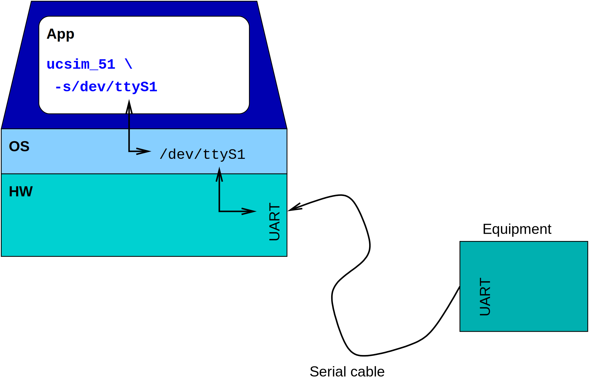

Using serial interfaces
Connecting a terminal
You can easily connect a terminal to the serial interface of the simulated
microcontroller. This terminal is just a file so it can be anything which is
represented as a file. It even can be a real serial line of the computer:
$ ucsim_51 -s/dev/ttyS1

Of course you must use the actual device name of your operating system.
Device name ttyS1 above is used in Linux systems. Your system
can use other names.
You can use a terminal of your system. It can be a virtual console if
your system provides such as Linux does for example. On X Windows you can
use xterm windows as terminals, one for running the simulator and
one as a terminal on CPU's serial line. Here is a sample how to do this:
- Prepare the terminal window which will be connected to the serial
line:
- Check the device name which represents the terminal:
$ tty
/dev/ttyp1
- Disconnect the shell from the terminal. Usually I use the tail
command and any existing text file:
$ tail -f $HOME/.profile
- Run the simulator in the other window:
$ ucsim_51 -s/dev/ttyp1 program.hex
Use the output of the tty command above as the parameter of the -s
option.
Every character sent out by the simulated program appears in the
"terminal" window and every character you type in there will be received
by the simulated controller's serial line.
Notes
-s option is deprecated, it is recommended to use -S instead. Option -S
provides more features and flexibility but it requires to use different
syntax:
-S subopt1,subopt2,...
Known suboptions are:
- uart=nr
This option specifies ID of the uart that following options will be
attached to. Default is 0.
- in=filename
Specified file will be used as input for the uart. When simulated uart
is able to receive, it will get content of this file.
- out=filename
Specified file will be used as output for the uart. When simulated uart
sends a byte, it will be written into this file.
- port=nr
Specified port number will be listened for incoming connections (TCP
server) and if connected, the socket will be used as both input and
output for the uart.
- iport=nr
Specified port number will be listened for incoming connections (TCP
server) and if connected, the socket will be used as input of the uart.
- oport=nr
Specified port number will be listened for incoming connections (TCP
server) and if connected, the socket will be used as output of the uart.
- raw
Raw, non-interactive communication will be performed on both input and
output files. Default is interactive (non-raw) mode.
Input and output file can be a regular file or a special one, for example
pipe (fifo) or a TCP socket. If a file is a tty, the simulator will assume
that a terminal is connected and will start an interactive session. TCP
socket is treated as a tty, and telnet protocol is used to control the
terminal settings. This can be turned off by raw suboption. If raw
is used, simulator will not perform any terminal control and will not
use/interpret telnet protocol commands.
Connecting two instances of simulator
Executing two instances of the simulator, serial lines of two simulators
(micros) can be connected together so they can talk to each other over their
serial interface. It is because you can specify separate files for serial
input and output. For example, you run two simulators "1" and "2", here is
the sample how to connect them:

- Make two FIFOs to represent physical wires in serial cable connecting
two micros:
$ mkfifo 1-2 2-1 # 1-2: 1->2 and 2-1: 2->1
- Start two simulators and specify the FIFOs as input and output of
serial interface:
term1 $ # start sim "1"
term1 $ ucsim_51 -Sin=2-1,out=1-2,raw program_1_.hex
term2 $ # start sim "2"
term2 $ ucsim_51 -Sout=2-1,in=1-2,raw program_2_.hex
Because opening a pipe blocks the program until other direction is
opened, the order of arguments above is important!
- Debug programs as usual.
Using the most useful unix commands cat and tee and just
some more FIFOs you can monitor serial communication, here is a sample:

- Make some FIFOs to use between simulators and tee "monitors":
$ mkfifo 1_tee tee_2 2_tee tee_2
- Run monitoring programs (in two xterms for example):
xterm1 $ cat 1_tee|tee /dev/tty >tee_2 # monitor 1->2
xterm2 $ cat 2_tee|tee /dev/tty >tee_1 # monitor 2->1
- Now you can start simulators (on two other terminals:)
xterm3 $ ucsim_51 -Sin=tee_1,out=1_tee,raw program_1_.hex
xterm4 $ ucsim_51 -Sin=tee_2,out=2_tee,raw program_2_.hex
- Start your apps and listen what they are talking about.